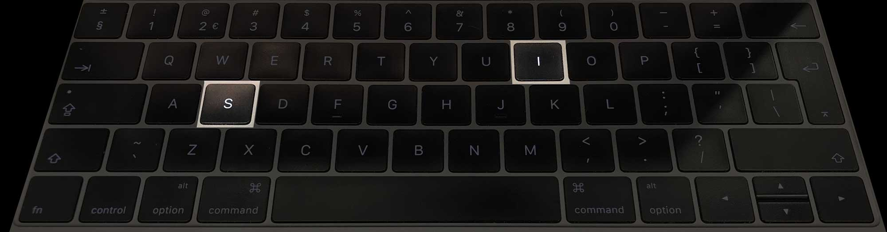
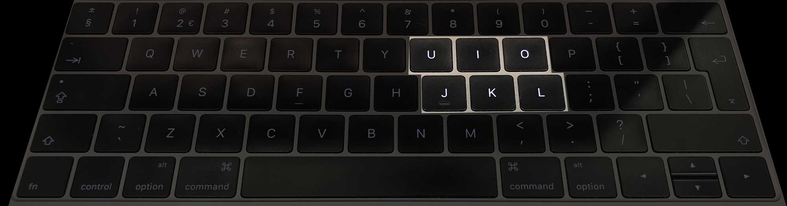

Marijn is a software engineer. He can only use his left hand, and with that hand he has difficulty with fine motor control. This means typing can be hard for him. It’s even one of the reasons why he didn’t finish university. He had to write papers. Marijn is incredibly intelligent, so thinking up a paper is very easy. Yet typing it would take him ages.
Basically the problem he has with keyboard layouts is that not all keys are next to each other.
On a QWERTY keyboard it’s easy for him to type the word was because the letters are close to each other.

Typing the word is is much harder though. He will have to move his hand and exactly point it to that one small square.
After observing Marijn using his computer, Rick Buter, a student of mine, explored alternative ways of typing words. What if, Rick thought, you would only need a few keys?

What if you could type complete sentences by only using the u, i, o, j, k, and l keys?
Allowing weird ideas
At first Rick didn’t dare to mention his idea, let alone create a working prototype. When he first thought of it, it simply seemed too ridiculous. Only when I explicitly asked my students to come up with nonsensical ideas did he dare to make a prototype and test it.
When he first showed this prototype to Marijn, he had to laugh indeed. It looked so ridiculous and complicated, it didn’t seem to make any sense. Yet after trying it a few times he had to conclude that this might actually work. If you want to you can try the prototype for yourself.
Allowing ideas that seem nonsensical into a design proces can lead to innovative products. This is a common ideation method used in many different creative fields. Questlove explains in his book about creativity that some musicians play music backwards in order to come up with completely new sounds2 (not just to listen to hidden satanic messages).
My personal interest in nonsense has grown while I was working at a large web design agency. Everything we did there had to make sense, by which I mean that everything had to have an easily measurable effect. More visitors, more money, better performance, simple things like that. And thus we only investigated the obvious. This always gave me the feeling that we were missing out on things.
Back in 2010, as a reaction to this professional focus on utility I started a website called Love Nonsense, in which I blogged about nonsensical, mostly funny but often insightful topics. I have worked on several nonsensical side projects as well. Like this script that translates colour code into written language.3
A very unsaturated magenta rectangle — very wide and not high at all — on a rather saturated, dark red backgroundAn animated keyboard. Just because it's possible
At first this idea of making colour accessible to blind people seemed nonsensical to me, since I assumed blind people can’t see colour. Later it turned out that some blind people can see colour, and others may have memory of it, like I explained in the section about Assumptions about blind people.
Just like the six-key-typing project by Rick Buter, this is an example of using nonsense in order to allow weird ideas, and exploring them. And in these cases they resulted in valuable new insights.
Apart from a simple ideation tool to allow weird ideas, there are other reasons to use nonsense as well. Other reasons are lifting ideas beyond the obvious, breaking out of a single rusty context, exploring the unexpected, and of course having fun.
Fun
Of course there are serious reasons for allowing nonsense into your design process. But for me the most important reason for using nonsense, and not some other ideation method, is to allow fun into the design process. Designing accessibility, helping disabled people lead an independent life is serious work. But it can be fun as well. And only if we allow fun will we be able to start making pleasurable user interfaces. If we do, maybe some day in the future Léonie Watson will come over to my university again, and this time she will be able to explain what makes an interface fun to use for someone who is blind.